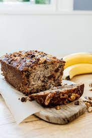

(Chocolate Chip Walnut) Banana Bread

Description
This banana bread is a favorite of mine. It's quick and easy and makes for a great snack or breakfast. The hardest thing about it is
not eating it all at once.
Ingredients
- 1 stick (.5 cups) butter
- 3 large, ripe bananas
- 2 large eggs
- 1 Teaspoon Vanilla Extract
- 2 Cups all-purpose flour
- 1 Cup granulated sugar (I prefer brown)
- 1 Teaspoon baking Soda
- .5 Teaspoon salt
- .5 Teaspoon cinnamon
- .5 Teaspoon nutmeg (optional)
- 1 Cup walnuts
- 1 Cup chocolate chips
Equipment
- Bread pan
- Parchment paper (useful but not necessary - you can use butter to grease the bread pan)
- 2 Mixing Bowls
- Rubber Spatula
- Fork
- Oven
Directions
- Preheat oven to 350 degrees
- Melt the butter in a microwave or in a saucepan on the stove
- Add the bananas to the butter and mash with a fork
- Add the vanilla extract and eggs, and mix together
- In a second bowl combine flour, sugar, salt, baking soda, cinnamon and nutmeg
- Add the dry ingredients to the wet ingredients but not all at once! Pour a little in, mix in, and repeat
until all ingredients are combined
- Add chocolate chips and walnuts, mix in
- Line bread pan with parchment paper. Don't worry about getting it flat against the sides, the bread will press it down as it bakes.
If you don't have parchment paper, grease the bread pan with butter.
- Pour the batter into the bread tin and bake for 45 - 55 minutes
- Bread is finished when a toothpick inserted into the center of the loaf comes out clean.
- Let cool before serving